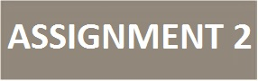
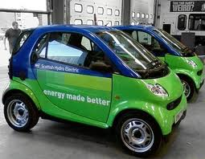

|
 |

|
Back |
ENVIRONMENTAL ISSUES AND ENERGY EFFICIENCY
Examples of Green Issues Websites
Additional features for the assignment 2
Environmental Issues

Environmental issues are harmful aspects of human activity on the biophysical environment. Environmentalism, a social and environmental movement that started in the 1960s, addresses environmental issues through advocacy, education and activism. current problems faced by the environment.
The carbon dioxide equivalent of greenhouse gases (GHG) in the atmosphere has already exceeded 390 parts per million (NOAA) (with total "long-term" GHG exceeding 455 parts per million). (Intergovernmental Panel on Climate Change Report) This level is considered a tipping point. "The amount of greenhouse gas in the atmosphere is already above the threshold that can potentially cause dangerous climate change. We are already at risk...It's not next year or next decade, it's now."
You can find more information on environmental issues if you follow the links below:
Energy Efficiency and Conservation Strategy

Energy or sustainability plans are the basic building blocks used to implement energy efficiency strategies designed to reduce fossil fuel emissions in transportation, building, and other applicable public and private sectors. Ambitious energy efficiency and greenhouse gas reduction goals require long-term strategic planning to effect lasting market transformation for energy efficiency.
Various methodologies designed to reduce total energy use and improve energy efficiency include as their first step the development of an energy efficiency and conservation plan which becomes the road-map for detailing priorities, setting goals, and establishing objectives.
The best practices, project resources, and tools available here can help you implement your energy efficiency conservation program to gain the highest savings results.
Some of the following website will give you some idea what can be done to save energy: